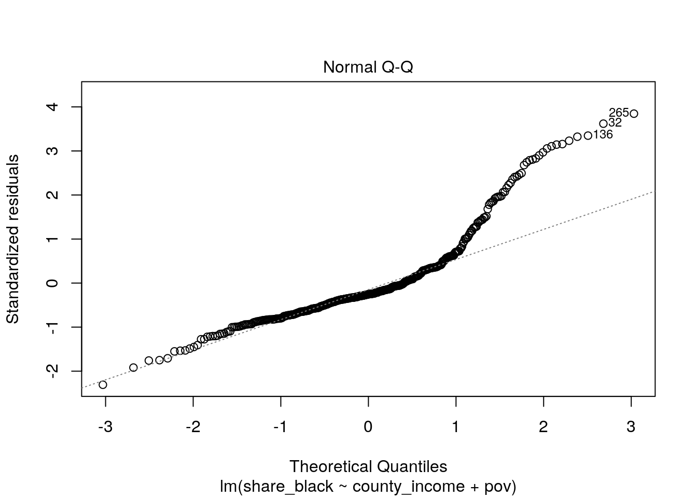

January 1, 0001
# install.packages('fivethirtyeight')
library(fivethirtyeight)
library(tidyverse)
library(ggplot2)
library(cluster)
library(sandwich)
library(lmtest)
data(police_killings)pk_data <- police_killings %>% na.omit0. Introduction
The data set I will be using is the police_killings data set. This data set records victims of police brutality in the United States in 2015. This data set is measuring the levels of police brutality in the United States in 2015 with 410 observations. Some observations from this data set include the victim’s name, age, biological gender in a binary fashion (male or female), whether the victim was armed or not, and the state the murder occurred in. Observations of the counties in which the killings happened as well as it’s respective income level, the proportion of the county that is White, Black, or Hispanic, and the level of unemployment in the county is also observed.
1. MANOVA
res.man <- manova(cbind(age, share_black, p_income, h_income,
pov) ~ raceethnicity, data = pk_data)
summary(res.man)## Df Pillai approx F num Df den Df Pr(>F)
## raceethnicity 4 0.43431 9.8415 20 1616 < 2.2e-16 ***
## Residuals 405
## ---
## Signif. codes: 0 '***' 0.001 '**' 0.01 '*' 0.05 '.' 0.1 ' ' 1summary.aov(res.man)## Response age :
## Df Sum Sq Mean Sq F value Pr(>F)
## raceethnicity 4 6168 1541.96 10.322 5.723e-08 ***
## Residuals 405 60500 149.38
## ---
## Signif. codes: 0 '***' 0.001 '**' 0.01 '*' 0.05 '.' 0.1 ' ' 1
##
## Response share_black :
## Df Sum Sq Mean Sq F value Pr(>F)
## raceethnicity 4 74519 18629.8 41.069 < 2.2e-16 ***
## Residuals 405 183719 453.6
## ---
## Signif. codes: 0 '***' 0.001 '**' 0.01 '*' 0.05 '.' 0.1 ' ' 1
##
## Response p_income :
## Df Sum Sq Mean Sq F value Pr(>F)
## raceethnicity 4 8.3957e+08 209891998 2.5041 0.04181 *
## Residuals 405 3.3946e+10 83817836
## ---
## Signif. codes: 0 '***' 0.001 '**' 0.01 '*' 0.05 '.' 0.1 ' ' 1
##
## Response h_income :
## Df Sum Sq Mean Sq F value Pr(>F)
## raceethnicity 4 6.7014e+09 1675356560 3.9134 0.003946 **
## Residuals 405 1.7339e+11 428112533
## ---
## Signif. codes: 0 '***' 0.001 '**' 0.01 '*' 0.05 '.' 0.1 ' ' 1
##
## Response pov :
## Df Sum Sq Mean Sq F value Pr(>F)
## raceethnicity 4 6968 1742.04 10.446 4.618e-08 ***
## Residuals 405 67539 166.76
## ---
## Signif. codes: 0 '***' 0.001 '**' 0.01 '*' 0.05 '.' 0.1 ' ' 1pairwise.t.test(pk_data$age, pk_data$raceethnicity, p.adj = "bonf")##
## Pairwise comparisons using t tests with pooled SD
##
## data: pk_data$age and pk_data$raceethnicity
##
## Asian/Pacific Islander Black Hispanic/Latino Native American
## Black 0.77 - - -
## Hispanic/Latino 0.35 1.00 - -
## Native American 0.72 1.00 1.00 -
## White 1.00 7.4e-06 1.5e-05 0.37
##
## P value adjustment method: bonferronipairwise.t.test(pk_data$share_black, pk_data$raceethnicity, p.adj = "bonf")##
## Pairwise comparisons using t tests with pooled SD
##
## data: pk_data$share_black and pk_data$raceethnicity
##
## Asian/Pacific Islander Black Hispanic/Latino Native American
## Black 0.0069 - - -
## Hispanic/Latino 1.0000 <2e-16 - -
## Native American 1.0000 0.0267 1.0000 -
## White 1.0000 <2e-16 1.0000 1.0000
##
## P value adjustment method: bonferronipairwise.t.test(pk_data$p_income, pk_data$raceethnicity, p.adj = "bonf")##
## Pairwise comparisons using t tests with pooled SD
##
## data: pk_data$p_income and pk_data$raceethnicity
##
## Asian/Pacific Islander Black Hispanic/Latino Native American
## Black 1.00 - - -
## Hispanic/Latino 1.00 1.00 - -
## Native American 0.83 1.00 1.00 -
## White 1.00 0.24 0.53 0.65
##
## P value adjustment method: bonferronipairwise.t.test(pk_data$h_income, pk_data$raceethnicity, p.adj = "bonf")##
## Pairwise comparisons using t tests with pooled SD
##
## data: pk_data$h_income and pk_data$raceethnicity
##
## Asian/Pacific Islander Black Hispanic/Latino Native American
## Black 1.000 - - -
## Hispanic/Latino 1.000 1.000 - -
## Native American 1.000 1.000 1.000 -
## White 1.000 0.018 0.104 0.531
##
## P value adjustment method: bonferronipairwise.t.test(pk_data$pov, pk_data$raceethnicity, p.adj = "bonf")##
## Pairwise comparisons using t tests with pooled SD
##
## data: pk_data$pov and pk_data$raceethnicity
##
## Asian/Pacific Islander Black Hispanic/Latino Native American
## Black 1.0000 - - -
## Hispanic/Latino 1.0000 1.0000 - -
## Native American 0.2840 0.5125 0.4039 -
## White 1.0000 9.4e-07 0.0018 0.0156
##
## P value adjustment method: bonferroni11 tests were performed with a 0.05 probability of a type I error if unadjusted and a 0.0045 bonferroni correction significance level. There was a significant difference in the age in which the victim was slain, the share of the population that is Black in the communities that the victims lived in, the household income of the victims, and the tract-level poverty rate in the communities that the victims lived, across the different race and ethnicities. The personal income of the victims, however, did not pass the needed p-value. This can be interpreted that victims of police killings do not have significant differences. The MANOVA assumption that there was an adequate sample size may not have been met as, thankfully, the data set of police killings is as extensive as other data sets may be. The observations are also not randomly and independently sampled as the data set records all police killings that occurred in 2015.
2. Randomization Test
fit <- aov(county_income ~ armed, data = pk_data)
summary(fit)## Df Sum Sq Mean Sq F value Pr(>F)
## armed 6 4.535e+08 75586610 0.44 0.852
## Residuals 403 6.921e+10 171735993I performed an ANOVA test on whether the victim was armed and the median household income of the county that the victim was killed in. The null hypothesis is that there is no difference in the mean of the median household incomes across the categorical variable of whether the victim was armed or not. The alternative hypothesis is that there is a difference in the mean of the median household incomes across the categorical variable of whether the victim was armed or not. With a p-value of 0.852, I fail to reject the null hypothesis. There is not a difference between the means of the median household incomes across whether the victim was armed or not. I do not interpret this as police killings as random, but rather indicative that police killings disproportionately frequent counties of similar economic statuses.
3. Linear Regression Model
fit <- lm(share_black ~ county_income + pov, data = pk_data)
summary(fit)##
## Call:
## lm(formula = share_black ~ county_income + pov, data = pk_data)
##
## Residuals:
## Min 1Q Median 3Q Max
## -51.857 -13.845 -5.798 7.156 87.494
##
## Coefficients:
## Estimate Std. Error t value Pr(>|t|)
## (Intercept) -1.525e+00 5.782e+00 -0.264 0.792
## county_income 5.363e-05 9.078e-05 0.591 0.555
## pov 7.950e-01 8.778e-02 9.057 <2e-16 ***
## ---
## Signif. codes: 0 '***' 0.001 '**' 0.01 '*' 0.05 '.' 0.1 ' ' 1
##
## Residual standard error: 22.86 on 407 degrees of freedom
## Multiple R-squared: 0.176, Adjusted R-squared: 0.172
## F-statistic: 43.47 on 2 and 407 DF, p-value: < 2.2e-16ggplot(pk_data, aes(x = share_black, y = county_income)) + geom_point() +
stat_smooth(method = "lm", col = "red") + labs(x = "Proportion of Black People in a County",
y = "Median Household Income", title = "Black Proportion vs. Median Household Income In A County")
ggplot(pk_data, aes(x = share_black, y = pov)) + geom_point() +
stat_smooth(method = "lm", col = "red") + labs(x = "Proportion of Black People in a County",
y = "Poverty Rate", title = "Black Proportion vs. Poverty Rate In A County")
plot(fit, 1)plot(fit, 2)
plot(fit, 3)fit2 <- coeftest(fit, vcov = vcovHC(fit))
summary(fit2)## Estimate Std. Error t value Pr(>|t|)
## Min. :-1.5246871 Min. :0.000087 Min. :-0.2804 Min. :0.0000
## 1st Qu.:-0.7623168 1st Qu.:0.054751 1st Qu.: 0.1675 1st Qu.:0.2693
## Median : 0.0000536 Median :0.109415 Median : 0.6154 Median :0.5386
## Mean :-0.2432059 Mean :1.849208 Mean : 2.5337 Mean :0.4393
## 3rd Qu.: 0.3975347 3rd Qu.:2.773769 3rd Qu.: 3.9407 3rd Qu.:0.6590
## Max. : 0.7950157 Max. :5.438123 Max. : 7.2660 Max. :0.7793For the linear regression model, the response variable I chose was the proportion of Black individuals in the county that the victim was killed. The predictor variables I used was the median household income of the county and the tract-level poverty rate of the county. The coefficient estimate for the county_income variable and the poverty variable was 5.363e-05 and 7.950e-01 respectively. The coefficient estimates can be interpreted in that as the proportion of Black people increases in a county, the median household income for that county decreases. On the same note, as the proportion of Black people increases in a county, the poverty rate increases. The variation in the outcome explained by the model is 0.176. Having graphed the assumptions, the assumption for linearity is very roughly passed, the assumption for normality is not passed, and the assumption for homoskedasticity is passed. The regression results with robust standard errors was ran.
4. Bootstrapped Standard Errors
fit <- lm(share_black ~ county_income + pov, data = pk_data)
summary(fit)##
## Call:
## lm(formula = share_black ~ county_income + pov, data = pk_data)
##
## Residuals:
## Min 1Q Median 3Q Max
## -51.857 -13.845 -5.798 7.156 87.494
##
## Coefficients:
## Estimate Std. Error t value Pr(>|t|)
## (Intercept) -1.525e+00 5.782e+00 -0.264 0.792
## county_income 5.363e-05 9.078e-05 0.591 0.555
## pov 7.950e-01 8.778e-02 9.057 <2e-16 ***
## ---
## Signif. codes: 0 '***' 0.001 '**' 0.01 '*' 0.05 '.' 0.1 ' ' 1
##
## Residual standard error: 22.86 on 407 degrees of freedom
## Multiple R-squared: 0.176, Adjusted R-squared: 0.172
## F-statistic: 43.47 on 2 and 407 DF, p-value: < 2.2e-16means <- vector()
for (i in 1:5000) {
samp <- sample(pk_data$share_black, replace = T)
means[i] <- mean(samp)
}
sd(means)## [1] 1.234124quantile(means, c(0.025, 0.975))## 2.5% 97.5%
## 15.93777 20.73929means2 <- vector()
for (i in 1:5000) {
samp <- sample(pk_data$county_income, replace = T)
means2[i] <- mean(samp)
}
sd(means2)## [1] 646.4241quantile(means2, c(0.025, 0.975))## 2.5% 97.5%
## 51839.12 54361.66means3 <- vector()
for (i in 1:5000) {
samp <- sample(pk_data$pov, replace = T)
means3[i] <- mean(samp)
}
sd(means3)## [1] 0.6696749quantile(means3, c(0.025, 0.975))## 2.5% 97.5%
## 20.11384 22.696895. Logistic Regression Model For Binary Variable
# fit4 <- glm((as.numeric(gender)) ~ p_income + college, data
# = pk_data) summary(fit4)For this linear regression model, I chose the variables of personal income of the victim, the proportion of the county that has at least a Bachelor of Arts, and the binary variable I chose is the gender of the victim. The coefficient estimates are 2.622e-06 and -2.697e-01. This can be interpreted in which that male victims will have a lower average personal income than female victims.
6. Logistic Regression Model for Binary Variable II
# fit2 <- glm((as.numeric(gender)) ~ age + pop + share_white
# + share_black + share_hispanic + p_income + h_income +
# county_income + comp_income + county_bucket + nat_bucket +
# pov + urate + college, data = pk_data) summary(fit2)